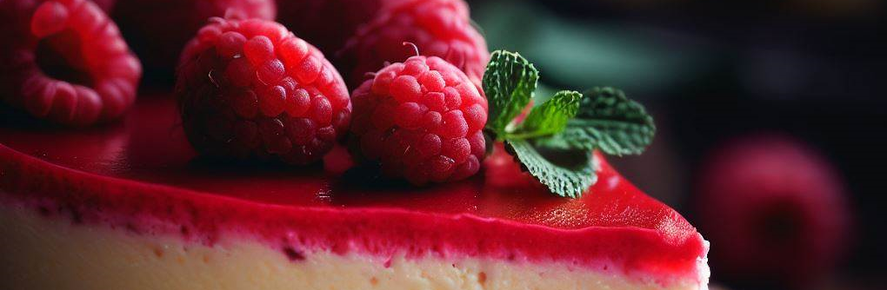
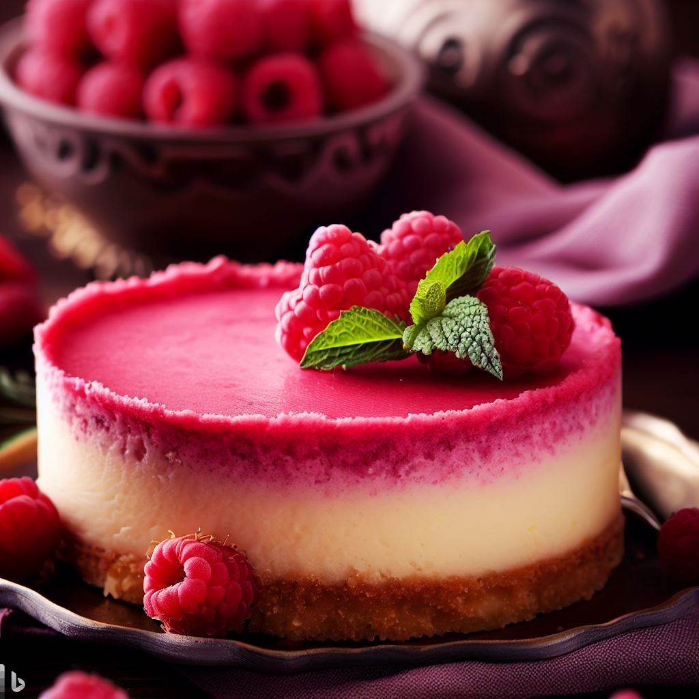

Cheesecake de Frambuesas, ¡Un postre otoñal y sin horno!
Cheesecake de Frambuesas, ¡postre delicioso y fácil de hacer!

Ingredientes para la base:
- 1/2 de galletitas sabor chocolate
- 150 grs de manteca
- 40 grs de azúcar impalpable
Ingredientes para el relleno:
- 580 grs de Queso Crema (La Serenisima o La Paulina)
- 200 ml de Crema
- 1 cucharada de ensencia de vainilla
- 1 sobre de gelatina sabor Frambuesa
Ingredientes para la cobertura de Frambuesa
- 1 paquete de Frambuesas frescas
- 100 grs de azúcar
Preparación para la base:
- Derretimos la manteca a baño María, mientras trituramos las galletitas. Las unimos.
- En un molde redondo (de 22cm) vertemos la mezcla y presionar con un vaso para que quede uniformemente.
Preparación para el relleno:
- En un bol, batir la crema. En otro bol batimos el queso crema con el azúcar impalpable y la esencia de vainilla. Luego mezclar la crema y añadimos lentamente la gelatina.
- Mezclamos todo e incorporamos el relleno a la base de galletitas. Agita un poco para que no queden burbujas.
- LLevamos el Cheesecake a la heladera y dejamos refrigerar mínimo 4 horas.
Preparación para la cobertura de Frambuesa:
- En una sartén incorporamos las Frambuesa con el azúcar y a fuego medio cocinamos hasta obtener una mezcla espesa.
- Por último, vertemos la mezcla al Cheesecake y volvemos a refrigerar otros 4 horas.
Nota:
- Para decorar el Cheesecake puedes añadir frutos rojos y con crema. (Puedes agregar arándanos a tu gusto).

¡Suscríbete para recibir nuestras recetas y novedades!